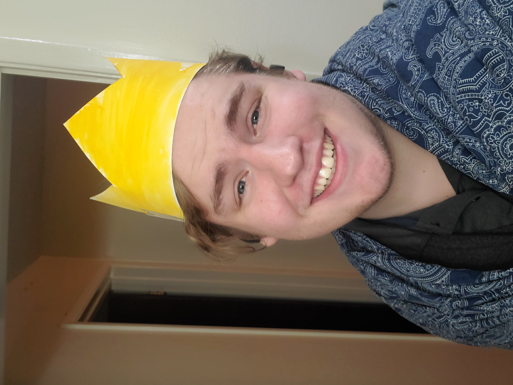

Darian Stark
Data Science | 3rd Year
Hi, my name is Darian Stark, overall, I'm a pretty big nerd. I love video games, dungeons and dragons, and not talking to girls. Jokes aside though, I've been really loving my time at Cal; getting to meet people, making friends, and getting to be independent. It's been awesome.

papertoilet
- I learned how much research and development goes into UI even if it seems so simple. The biggest takeaway was how important guiding the user was
- As simple as it sounds, I really loved how it used simple and easy to understand language with clear and engaging pictures or gifs in order to showcase what they were talking about
- "Open an app you use often and resist the urge to start scrolling through content. Instead, I want you to actively focus on the screen in front of you"
- I would score the article an 8/10